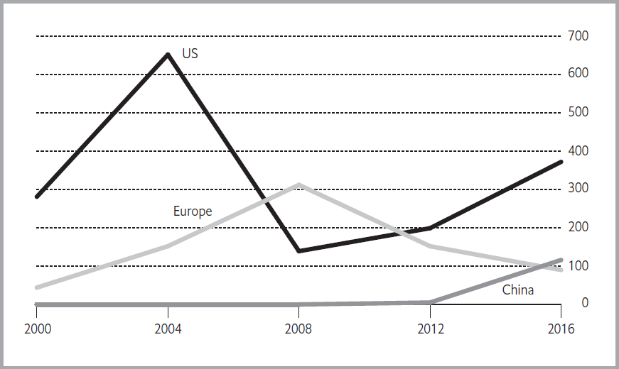
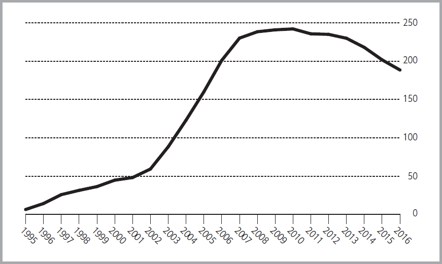

证券化
回到目录
传统上，投资者倾向于选择债券，因为它们具有安全性和可预测性。固定利率债券承诺提供有保证的现金流：每次利息支付的金额和日期在债券发行时已明确规定，债券赎回的日期也已确定。如果债券可能在到期前被赎回，其条件也会被明确说明。因此，投资者能够准确知道未来5年、10年或20年内将收到多少资金以及可能的赎回条件。
资产支持证券（Asset-Backed Security, ABS）是一种不同于传统债券的债券形式，无法提供上述确定性。在大多数情况下，这类证券并未受到政府或私营公司的全面信用背书，而是由债权人（通常是贷款人）发行，以特定资产未来可能产生的收入流作为支持。 然而，这些收入流的按期收取并无保证。一些收入可能完全无法到达，有时资产甚至会被提前清算，导致债券持有人获得的利息收入低于预期。因此，与传统债券相比，未来现金流在这种情况下只能进行猜测，而难以以较高的信心来预测。
为了弥补这种不确定性，投资资产支持证券的投资者通常可以获得比普通政府或公司债券更高的收益。同时，这类证券比其所基于的单个资产更容易买卖（即具有更高的流动性），因此投资者更容易进入或退出某类特定投资。
这种优势使得资产支持证券在2007年之前的数年里极为流行。然而，在2007至2008年期间，一些类型的资产支持证券出现了大幅亏损，发行量也大幅下降，这表明部分证券的价格未能充分反映其风险。截至2017年，其发行量仍未能恢复至2006-2007年的水平。
根据债券评级机构穆迪（Moody's）的统计，自1996年以来，证券化平均满足了全球40%的融资需求，但自2014年以来这一比例下降至约30%，原因在于投资者转向了其他类型的证券。
非抵押资产支持证券的发行情况（2017年，单位：十亿美元）
| 国家 | 发行金额（十亿美元） |
|---|---|
| 美国 | 510 |
| 中国 | 220 |
| 欧洲 | 91 |
| 日本 | 48 |
| 澳大利亚 | 36 |
| 加拿大 | 16 |
| 拉美地区 | 15 |
资产支持证券可以以固定利率或浮动利率出售。它们可以大致分为两类：
- 抵押支持证券: 这些证券由住宅房地产的第一抵押贷款支持。
- 非抵押证券: 这些证券可以由任何其他类型的资产支持，包括非第一抵押贷款的住房相关贷款。
到2008年底，抵押支持证券约占全球所有资产支持证券的80%。在21世纪的头几年，许多国家的其他资产证券化迅速增长。到2004年12月，非抵押资产支持证券的总价值超过了2万亿美元。全球各类证券化工具的发行在2006年达到了峰值，然后在2007年开始的金融危机期间急剧下降。从那时起，北美和欧洲的发行量持续低迷，但在中国的发行量却呈爆炸性增长。表5.1展示了2017年各国非抵押资产支持证券的发行金额。
证券化过程
证券化是将个别资产（这些资产单独来看可能很难出售甚至评估价值）聚集成可以在金融市场上出售的证券的过程。已知的最早的证券化发生在丹麦，抵押债券长期以来用于为房屋购买提供融资。到1970年代，抵押证券在美国得到了广泛使用。此后，创新导致了其他类型资产的证券化，资产支持证券在欧洲和亚洲的多个国家扎根。
证券化过程从创建将来要证券化的资产开始。通常情况下，这些资产是在正常的商业活动中产生的：如抵押银行向购房者发放贷款；银行向客户发放信用卡；电影公司发布电影。在正常情况下，这类资产会被记录在公司的账簿上，资产所产生的收入（如贷款支付）将在它们到达的未来年份作为收入进行报告。
证券化涉及将这些资产转化为可以出售给第三方的证券。证券化通常是在投资银行的帮助下完成的，投资银行设立一个信托，其唯一目的是拥有被证券化的资产。通常，每个信托的创建目的是拥有由单一类型资产组成的资产池，例如1亿美元的汽车贷款。信托将用通过向投资者销售资产支持证券所筹集的资金从公司购买这些资产。证券的持有者有权收到资产所产生的任何收入，并且在大多数情况下，还可以按比例分享这些资产本身。当信托所持有的个别资产被偿还时——例如，当一笔贷款被偿还——信托的规模将缩小。最终，所有资产都将被偿还，届时信托将终止。
一般来说，资产支持证券背后的资产多样性为投资者提供了安全性。然而，一些贷款人可能会试图将他们发放的大部分贷款证券化，并持有其中少数贷款，这样他们就没有足够的激励来确保这些贷款的健康性。对不健康贷款的证券化是导致2007年金融危机的重要原因，并对投资者和发行证券的银行造成了巨大的损失。由于这些问题，许多国家的金融监管机构要求银行保留它们捆绑在证券中的贷款的一个重要部分，并保留资本（即股东资金）以应对它们持有部分价值的下降。这些新规定使得证券化的成本上升，从而使其吸引力下降。
对担保的依赖
在许多情况下，资产支持信托的投资者可以受益于某些担保。政府通常会为住宅抵押贷款的部分或全部支付提供担保，以鼓励住房建设。原始贷款人也可能为贷款支付提供担保，以吸引投资者购买其资产。在这种情况下，贷款人将资产以追索权的形式出售给信托，这意味着如果个别借款人未按计划支付利息或本金，信托将向贷款人寻求补偿。
为什么要进行证券化？
证券化的动机在于它为选择证券化资产的公司带来的好处。证券化因多种原因而具有吸引力：
-
它使公司能够专注于其在复杂业务中的特定方面，而不是参与业务的所有领域。许多大型金融公司通过采取非常规方法专注于一个特定任务而取得成功，例如向移动房屋所有者贷款或识别潜在盈利的信用卡客户的特征。公司可能在业务的其他部分（如管理已创建的资产）没有特别的专业知识。通过证券化出售资产，允许公司专注于其最擅长的业务，能够为公司增加最大的价值。
-
卖出资产使发行人能够改变他们的风险概况。例如，录音艺术家面临的一个风险是，随着口味的变化，他们的专辑销量可能减少。通过证券化某些录音，艺术家可以立即获得指定金额的收入。他们可能会失去从一个大热的作品中获得巨额利润的机会，但也避免了可能被大众所遗弃并经历销量下滑的风险。如果艺术家愿意，还可以构建交易结构，如果某一专辑销售超过指定数量，他们将获得部分额外的利润。
-
发行人可能希望减少他们的资本需求。以银行为例，银行按照其资产的大小和类型要求保持资本。当银行发放贷款时，贷款的市场价值会作为资产出现在其资产负债表上，银行必须为该资产可能的价值下降准备适当的资本。该机构可能发现，资本的大部分被这样占用限制了它将资本用于其他能为股东带来更好回报的用途的机会，例如融资新投资或收购其他公司。证券化这些资产允许银行将其完全或部分从资产负债表中剔除，从而腾出资本用于其他用途。银行将不再收到贷款的利息支付，但它已经脱离了贷款未能及时偿付的风险。银行可以将多余的资本退还给股东，或者用于发展业务的其他部分，例如发放将被证券化的贷款，从而可能为股东创造更好的回报。
-
销售证券化资产创造了公开可得的价格。一些类型的资产，例如房地产或设备租赁，交易起来复杂且由于其独特性，难以估值。资产支持证券通常比这些基础资产更容易交易。如果由办公楼抵押贷款支持的证券的价格是两年前的一半，投资者、监管机构和管理者将合理地估计一个贷款人的商业抵押贷款组合的价值，即使这些特定资产尚未证券化。
市场发展
在21世纪初之前，证券化在美国是一项庞大的业务，而在其他地区几乎不存在。几个因素推动了其发展。首先，监管环境总体上对创新是有利的，甚至通过降低银行证券化贷款的成本，而非将贷款留在自身资产负债表上，来鼓励创新。其次，美国的法律体系没有阻碍这一进程。相比之下，在日本和意大利等国家，用于保护借款人权利的法律延缓了资产证券化的发展，因为信托是否能够清晰地拥有其从发行方购买的任何资产的所有权存在不确定性。第三个影响因素是投资者愿意进行复杂的数学分析以确定资产支持证券的价值。在一些国家，投资者主要习惯于购买和持有债券和股票，而不熟悉这种复杂的分析，因此对接受资产支持产品持迟疑态度。
2000年后，证券化市场发生了巨大变化。证券化开始在欧洲和亚洲的部分地区流行（见下图）。日本在1993年开始允许证券化，以帮助陷入困境的银行处置资产，例如作为违约债务担保的房地产。台湾于2003年6月通过了一项鼓励证券化的法律。2002年，印度首次发行资产支持证券，中国的第一只证券则在2006年进入市场。

这种快速增长得益于一种特殊类型证券的兴起，即担保债务凭证（Collateralised Debt Obligation, CDO）。CDO在20世纪90年代初被开发，但直到2000年以后，它们才开始包含大量资产支持证券。CDO的发起人可能通过从投资者那里筹集资金、额外借款，并用这些资金购买资产支持证券或其他资产。在金融危机爆发后，持有资产支持证券的CDO发行量急剧下降，但到2016年有所回升。
资产支持证券发行的快速增长阶段随后在2007年下半年开始出现全球性的急剧下降。随着全球经济问题的加剧，越来越多的借款人违约，包括汽车贷款、房屋净值贷款和其他已经证券化的贷款。这意味着资产支持证券的投资者未能收到他们预期的利息支付，而这些证券本身也失去了价值。许多被评级机构给予高评级的资产支持证券最终违约，这动摇了市场信心，并导致证券化活动的减少。此后，一些国家的银行监管机构要求银行持有它们发行的部分资产支持证券，而不是完全将其出售给外部投资者。这一要求为银行提供了确保所创建资产支持证券质量的激励，但同时也限制了发行量。
抵押贷款支持证券
抵押贷款是迄今为止最重要的资产支持证券来源。此类证券使投资者有权从大量抵押贷款中获得利息支付，这些抵押贷款被捆绑在一起形成证券。大多数抵押贷款支持证券都基于住宅抵押贷款，但商业抵押贷款支持证券 (CMBS) 也有一个重要的市场。这些通常基于单一类型的集合贷款，例如酒店或办公楼的抵押贷款。
房利美引领潮流
虽然丹麦人被认为是第一个提出发行住宅抵押贷款债券的人，但现代资产支持证券市场最重要的一步是 1938 年联邦国民抵押贷款协会 (FNMA) 的成立。这家名为房利美的公司最初是美国政府机构，成立的目的是创建抵押贷款的二级市场。一级抵押贷款市场涉及一家私人公司（称为发起人）向购房者放贷的决定。当房利美从二级市场购买此类贷款时，房利美使贷款人能够发放更多贷款，从而为房地产市场提供了巨大的推动力。以房利美为榜样，私营部门实体早在 1949 年就开始在二级市场交易中购买个人抵押贷款，美国政府监管机构于 1957 年正式允许储蓄机构买卖抵押贷款。
从成立之初，房利美就采取了对二级市场发展至关重要的措施。它制定了发放所购抵押贷款的标准程序，包括评估财产的方法、评估个人借款人信用度的规则以及将抵押贷款资格与收入联系起来的规则。它还制定了管理服务、从借款人收取利息和本金的规则，这些通常由贷款人处理。这些标准最终使抵押贷款支持证券的发展更加顺利：尽管支持特定证券的每笔抵押贷款在细节上都有所不同，但投资者可以放心，每笔抵押贷款都符合相同的一般标准。
转手凭证
最初，房利美使用政府资金从发放抵押贷款的贷方手中购买抵押贷款，抵押贷款的利息用于偿还政府。然后，在 20 世纪 60 年代，投资银行家想出了一个办法，通过将抵押贷款转化为证券，而不是买卖个人抵押贷款，来吸引私人投资。这些新证券被称为转手凭证，之所以这样命名，是因为支持证券的贷款抵押人每月到期的本金和利息将直接转给投资者。转手凭证于 1970 年首次发行，是第一种现代资产支持证券。
CMBS
许多不同类型的抵押贷款都被证券化。除了活跃的单户抵押贷款证券市场外，商业抵押贷款支持证券（CMBS）的发行量也相当可观。这些证券可能基于公寓楼、老年人住房、零售开发项目、仓库、酒店、办公楼和其他类型建筑的抵押贷款。这种类型的证券至少从 20 世纪 20 年代就已存在。在清算信托公司（一家美国政府机构，于 20 世纪 90 年代初成立，负责处置破产储蓄机构的资产）成立后，它们得到了广泛使用。清算信托公司发现，通过证券化可以比逐一出售这些贷款更快地处置它们，因此在 1998 年停止运营之前，它发行了近 180 亿美元的证券。
投资银行紧随其后，开始定期将商业抵押贷款证券化，主要出售给寿险公司。 2007 年，美国和欧洲的 CMBS 总发行量达到 3000 亿美元。然而，全球经济疲软导致商业地产空置率上升，租金下降，对 CMBS 投资者造成冲击。2008-09 年，商业抵押贷款的新证券化微不足道。此后，美国市场已经复苏，但欧洲市场仍然低迷。
REMIC
证券化发展的另一个重要步骤发生在 1986 年，当时美国国会修改了税法，规定了房地产抵押贷款投资渠道，即 REMIC。这是一种法律手段，可确保抵押贷款支持证券产生的收入对购买证券的投资者征税，但对名义上拥有基础抵押贷款并向个人抵押人收取付款的信托不征税。美国许多抵押贷款支持证券现在都是通过 REMIC 发行的。
美国机构证券
美国政府资助的多家实体推广二级市场抵押贷款支持证券的二级市场。它们发行的证券统称为机构证券。机构证券市场已发展成为最大的金融市场之一（见下表）。2017 年年中，其总未偿还金额为 7.6 万亿美元。2017 年日均交易量约为 2000 亿美元，较 2008 年近 3500 亿美元的峰值有所下降。2008 年至 2017 年期间，美联储购买了许多新发行的机构证券，以压低利率并刺激经济。一般而言，机构证券以发行机构的名称命名，每个机构的证券特征略有不同。
美国政府机构抵押贷款支持证券. 单位：十亿美元
| 年份 | 发行金额 | 年末余额 |
|---|---|---|
| 1996 | 441 | 1,711 |
| 2000 | 581 | 2,492 |
| 2004 | 1,376 | 2,274 |
| 2008 | 1,339 | 4,956 |
| 2012 | 2,082 | 5,656 |
| 2016 | 1,753 | 6,530 |
房利美
房利美由前联邦国民抵押贷款协会发行，该协会最初是美国政府企业。在成为以房利美为名的股东所有公司后，该公司于 2008 年破产。它被置于政府的监管之下，政府注入资金以维持其运转。它继续发行由全国各地贷款支持的证券，使投资者能够降低特定地区的经济困境导致特定池中大量证券违约的风险。固定利率抵押贷款池中个人贷款的利率可能在 2.5 个百分点的范围内变化。根据这些个人利率，房利美发行每张带有特定利率的证券，并保证投资者每月都能及时收到本金和利息，即使个人借款人未能偿还。该公司通过个人借款支付的利率与支付给投资者的较低利率之间的差额以及各种费用来赚钱。截至 2016 年底，房利美的未偿还金额超过 3290 亿美元，自 2010 年以来稳步下降。该公司的破产并未直接影响其未偿还的抵押贷款支持证券，该公司仍在继续发行抵押贷款证券。
吉利美
吉利美是由私人贷款机构在美国政府公司政府国民抵押贷款协会 (GNMA) 的支持下发行的证券。GNMA（因此得名吉利美）于 1968 年从房利美分离出来，旨在促进中等收入家庭的住房所有权。吉利美池中的每一笔抵押贷款都由某个政府机构担保，例如退伍军人管理局，该机构为美国武装部队前成员提供抵押贷款担保。贷款人将抵押贷款组合成一个具有类似支付特征和期限的贷款池，然后获得吉利美的许可，根据这些抵押贷款发行证券。贷款方负责从个人借款人那里收取利息和本金，并每月向其发行的证券持有人支付款项，但政府的充分信任和信用保证投资者将收到所有到期的本金和利息。2016 年，Ginnie Maes 发行了约 5260 亿美元，是有史以来单年发行量最高的一年。当年年底，未偿还的 Ginnie Maes 票面价值超过 1.7 万亿美元。
房地美
房地美由联邦住房抵押贷款公司 (FHLMC) 发行，该公司是一家根据美国政府特许成立的私营公司。与房利美和吉利美一样，房地美仅在二级市场运营，不直接向个人借款人放贷。根据政府法规，该公司有义务将其部分抵押贷款用于低收入和中等收入家庭。其证券类似于与其竞争的房利美发行的证券，不构成政府的义务。与房利美一样，由于抵押贷款借款人违约率上升而造成的损失导致该公司在 2008 年被置于政府监管之下，但房地美继续购买贷款并发行抵押贷款支持证券。截至 2016 年底，其未偿还证券为 3540 亿美元。
农民抵押贷款
农民抵押贷款是农场和农村住宅抵押贷款的转手产品。联邦农业抵押贷款信贷公司 (FAMCC) 是一家由美国政府设立的股东所有制公司，它将农业抵押贷款和美国农业部担保的贷款证券化，其中一些贷款并非抵押贷款。该公司向其证券的购买者保证支付利息和本金，其担保由美国财政部 15 亿美元的信用额度支持。Farmer Mac 证券的规模远小于美国二级抵押贷款市场中其他政府支持的参与者的规模。
美国以外的抵押贷款证券
2016 年，欧洲发行了价值约 1330 亿美元的住宅抵押贷款证券。1998 年之前，欧洲几乎没有住宅抵押贷款证券化，此后几年，其快速增长助长了许多欧洲国家的房地产泡沫，尤其是爱尔兰和西班牙，随后的住宅房地产崩盘导致了严重的经济困境。近年来的发行量尚未超过 2008 年高峰期的五分之一。下表显示了欧洲抵押贷款支持证券发行的趋势。
欧洲发行的住宅抵押贷款证券, 单位: 十亿欧元
| 年 | 发行量 |
|---|---|
| 2000 | 41.80 |
| 2004 | 154.20 |
| 2008 | 897.00 |
| 2012 | 176.80 |
| 2016 | 133.20 |
加拿大
NHA MBS 是加拿大政府机构加拿大抵押贷款和住房公司根据《国家住房法》发行的抵押贷款支持证券。该公司购买并证券化由加拿大授权私营部门贷方发行的抵押贷款。其直通证券由单户住宅抵押贷款、多户住宅抵押贷款、社会住房抵押贷款或三者的组合支持。利息和本金支付由该公司担保，因此由加拿大政府担保。截至 2016 年 12 月，该公司的未偿还抵押贷款支持证券总额为 4640 亿加元（3460 亿美元）。
丹麦
丹麦的未偿还抵押贷款支持证券总额超过 4500 亿美元，对于一个小国来说，这是一个巨大的数目。这是因为丹麦几乎所有的住房抵押贷款都是证券化的。丹麦抵押贷款证券由期限为 10-30 年的固定利率住宅抵押贷款支持，但与美国一样，个人借款人可以在抵押贷款到期日之前自由偿还，不会受到处罚。与美国抵押贷款支持证券不同，丹麦的抵押贷款支持证券结合了商业和住宅地产，投资者通常按季度而不是按月收到利息。基础抵押贷款仍保留在发行它们的抵押贷款银行的资产负债表上，不会出售给信托。
德国
Pfandbriefe 是由欧洲某些抵押贷款银行或国有银行发行的证券。Pfandbriefe 是德国的产物，但西班牙和法国的金融机构也是主要发行者。有两种基本类型：Hypothekenpfandbriefe，由符合德国政府制定标准的住宅抵押贷款支持；Oeffentliche Pfandbriefe，由德国或其他欧洲国家的公共部门债务支持。Oeffentliche Pfandbriefes 以前占市场的四分之三，但自 2000 年以来，它们在市场中的作用迅速减弱。
Pfandbriefe 与其他资产支持证券的不同之处在于，它们是由银行直接发行的，而不是通过特殊目的载体发行的，资产仍保留在银行的资产负债表上。此外，与其他资产支持证券不同，Pfandbriefe 并非由固定资产池支持。发行银行可以不时向资产池增加资产，如果资产无法产生足够的收入来支付债券持有人，则要承担法律责任。出于这些原因，与大多数其他类型的资产支持证券的投资者不同，Pfandbriefe 的投资者必须密切关注发行证券的银行的财务实力，因为它是最终的付款担保人。大多数德国抵押贷款未通过 Pfandbriefe 证券化，因为只有不超过房产价值 60% 的抵押贷款才有资格。截至 2017 年，大约有 1400 亿欧元的抵押贷款 Pfandbriefe 在流通，此外还有大约 640 亿欧元的公共部门 Pfandbriefe。自 2009 年以来，抵押贷款占新发行量的大部分。
英国
英国首只抵押贷款支持证券是 1987 年为国家住房贷款公司发行的 5000 万英镑。当年英国共发行了 10 亿英镑的抵押贷款支持证券，此后市场稳步增长。英国住宅抵押贷款市场的独特特征阻碍了其扩张。大部分抵押贷款的浮动利率经常调整；长期固定利率抵押贷款并不常见；借款人能够以很小的成本增加未偿还抵押贷款的金额或更换贷款人。这些特点使得许多英国抵押贷款不适合打包成长期证券。英国抵押贷款支持证券的存量在 2008 年达到顶峰，此后一直在减少。根据英国金融行为监管局的数据，截至 2016 年底，个人住房贷款证券化金额达 760 亿英镑，仅为 2008 年峰值的三分之一。
欧洲其他地区
在欧洲其他地区，在欧元诞生之前，抵押贷款支持证券的发行量微不足道。欧元区的抵押贷款发行量在 2004 年开始快速增长，但在 2008 年达到峰值后同样迅速下降。其他欧洲国家的抵押贷款支持证券几乎全部都是私营部门交易，因为没有与房利美或吉利美相当的欧洲机构。
日本
在日本，抵押贷款支持证券的发展受到法律的阻碍，法律允许抵押人反对转售其抵押贷款。 1998 年首次发行抵押贷款支持证券的尝试失败了。不过，2000 年成功发行了数次。2007 年成立的日本住房金融局 (Japan Housing Finance Agency) 的计划模仿了房利美 (Fannie Mae) 和吉利美 (Ginnie Mae)，并已成为抵押贷款支持证券的主要发行人。2016 年，该机构发行了面值为 2.5 万亿日元（230 亿美元）的抵押贷款支持证券。
中国
2000 年 4 月，中国人民银行（即中央银行）批准发行抵押贷款支持证券。但直到 2005 年才开始发行，2007 年至 2014 年之间也没有发行。市场规模仍然很小。
澳大利亚
抵押贷款证券化市场曾经在澳大利亚占有重要地位，2006 年发行量达到 740 亿美元的峰值，当时许多抵押贷款支持证券都面向外国投资者。然而，自 2007 年以来，抵押贷款支持证券化已大幅下降，银行发行债券作为抵押贷款融资方式已基本取代了证券化。2008 年至 2015 年期间，政府机构澳大利亚金融管理办公室 (Australian Office of Financial Management) 被要求投资抵押贷款支持证券，以支持市场竞争。
非抵押贷款证券
随着投资者习惯于购买抵押贷款支持证券，金融市场参与者自然开始考虑其他类型资产支持证券的可能性。这一过程中最热心的参与者是银行，它们利用证券化充当借款人和投资者之间的中介，而不是借入资金的最终提供者。许多非银行贷款机构也转向证券化来为其活动提供资金，特别是因为证券化使他们能够以比他们筹集资金来支持大量贷款组合时更快的速度增长。下表显示了美国基于非抵押贷款资产的证券数量的变化。
美国已发行的资产支持证券（不包括抵押贷款）, 单位: 十亿美圆
| 类型 | 1996 | 2000 | 2004 | 2008 | 2012 | 2016 |
|---|---|---|---|---|---|---|
| 汽车贷款 | 67 | 141 | 176 | 140 | 142 | 196 |
| 信用卡贷款 | 168 | 240 | 299 | 316 | 128 | 131 |
| 设备贷款 | 23 | 45 | 45 | 44 | 42 | 51 |
| 学生贷款 | 14 | 45 | 123 | 239 | 235 | 189 |
| CDOs（债务担保证券） | 9 | 177 | 386 | 975 | 621 | 618 |
| 其他 | 16 | 58 | 73 | 110 | 105 | 154 |
| 总计 | 298 | 705 | 1101 | 1823 | 1273 | 1337 |
下表包含欧洲的类似信息。
欧洲已发行的资产支持证券（不包括抵押贷款）, 单位: 十亿欧元
| 类型 | 2000 | 2004 | 2008 | 2012 | 2016 |
|---|---|---|---|---|---|
| 汽车贷款 | 5 | 21 | 51 | 64 | 79 |
| 消费者贷款 | 7 | 20 | 65 | 72 | 71 |
| 信用卡贷款 | 10 | 20 | 41 | 31 | 17 |
| 租赁 | 4 | 23 | 41 | 31 | 17 |
| 其他 | 19 | 50 | 83 | 74 | 51 |
| 总计 | 45 | 134 | 281 | 272 | 235 |
信用卡证券
这些证券曾是美国和欧洲最大的非抵押资产支持证券类别。许多大型银行已将其部分或全部信用卡投资组合证券化，以便将其资本用于更有利可图的用途。然而，证券化已从金融危机前的高峰大幅下降。2017 年初，美国未偿还的信用卡证券（通常提供浮动利率）约为 1260 亿美元，仅为 2008 年峰值的三分之一。在欧洲，2017 年未偿还的信用卡资产支持证券为 330 亿美元，主要在英国。发行量减少的一个原因是许多银行减少了信用卡贷款，消费者也更不愿意承担信用卡债务。
房屋净值贷款
2008 年之前，房屋净值贷款支持的证券在美国蓬勃发展，这种证券通常由第二留置权担保（仅在借款人偿还了第一抵押贷款持有人的债务后才提供担保）。税法变更取消了对其他类型消费者借贷的偏好后，它们开始流行起来。许多向高风险借款人发放的抵押贷款，即次级贷款，在资产支持证券市场上以房屋净值证券的形式进行交易，由于基础抵押贷款的借款人违约，成千上万的此类证券未能按预期表现。自 2007 年春季以来，未偿还的房屋净值资产支持证券数量稳步下降，因为现有的房屋净值贷款已偿还或注销，而新贷款很少。2012 年仅发行了 40 亿美元的房屋净值资产支持证券，低于 2006 年 4830 亿美元的峰值。据信近年来的发行量较小，但并未披露。
汽车贷款
汽车贷款通常由汽车制造商的金融部门进行证券化，在资产支持市场中根深蒂固。2017 年，美国未偿还的汽车贷款证券约为 1920 亿美元，欧洲为 730 亿美元，澳大利亚、加拿大和阿拉伯联合酋长国的未偿还金额较小。发行量取决于汽车销售量以及银行或汽车公司利用自有资源为这些销售提供融资的意愿；2012 年，美国汽车销售强劲复苏，汽车贷款证券化也大幅增加。与大多数信用卡和房屋净值证券不同，基于汽车贷款的资产支持证券通常具有固定利率。还有大量证券由飞机、集装箱、火车车厢以及农业和建筑设备贷款支持。
预制房屋证券
预制房屋证券于 20 世纪 90 年代初推出，曾被视为高风险贷款，不适合证券化，因为借款人通常收入不高，贷款程序不统一，而且房屋本身的价值不太可能逐年升值。然而，一旦非银行贷款机构开始提供和证券化预制房屋贷款，高利率就会对投资者产生吸引力。1999 年，美国售出了约 150 亿美元的预制房屋支持证券。由于 2000 年和 2001 年经济增长放缓、失业率上升，许多贷款违约。自 2002 年以来，这种类型的新证券发行很少，由于借款人违约或偿还贷款，未偿还金额已降至接近零。
学生贷款
学生贷款自 1993 年 6 月才开始证券化。大多数学生贷款证券化都是由学生贷款营销协会 (SLMA) 进行的，该协会是美国政府设立的一家股东所有的公司。该公司名为 Sallie Mae，在二级市场购买学生贷款并将其打包出售为证券。下图显示了未偿还金额，截至 2017 年，占美国所有资产支持证券的 14%。
未偿还的学生贷款证券, 单位: 十亿美元 
其他各种资产支持证券
经常有新型资产支持证券出售。尽管小企业贷款是一种相当多样化的资产，但多家银行已成功将其证券化。人寿保险单和防范自然灾害的财产保险单也已证券化。电影发行公司（如华特迪士尼公司）已成功将电影系列的预期收入证券化，1998 年，歌手大卫·鲍伊将已发行唱片的未来收入证券化。预期门票收入支持的证券已用于在美国几个城市建造体育场馆。然而，与贷款证券化不同，体育和娱乐证券化通常是独一无二的交易，不占很大市场份额。它们带来了其他类型证券化所没有的一些重大风险，因为证券的价值在很大程度上取决于特定艺人或运动员未来推广其产品的能力和意愿。
资产支持商业票据
支持中期和长期证券的资产也可用于支持商业票据，即期限少于 270 天的证券。完全支持的票据由基础资产以外的来源（如保证金或信用证）保证偿还，而部分支持的资产支持票据的偿还主要取决于资产池的现金流。该票据由信托或其他特殊目的载体发行，使用收益购买应收账款等资产。信托可以从一家公司或几家不同的公司购买这些资产。
资产支持商业票据是为了满足投资者在公司发行量有限的情况下对高质量商业票据的需求而创建的。实际上，通过重新包装长期债务，投资银行能够以所需的期限销售证券。然而，在 2007 年，这种为投资者设计的低风险产品遭受了严重破坏，因为投资者因担心基础资产质量下降而退出。在美国，由于发行人无法展期其债券，未偿还的资产支持商业票据价值从 2007 年 7 月的 1.2 万亿美元下降到五个月后的 8390 亿美元。美联储委员会担心货币市场共同基金无法出售其持有的资产支持商业票据以满足投资者的赎回要求，因此为这些基金提供了有限期限的紧急融资。加拿大资产支持商业票据市场也出现了类似的问题，导致联邦政府和三个省支持实施强制性重组计划。
2017 年年中，美国未偿还的资产支持商业票据约为 2500 亿美元，仅为 2007 年峰值的五分之一。欧洲未偿还的金额为 190 亿欧元，低于 2007 年初 580 亿欧元的峰值。
结构化融资
资产支持证券的基本原理相当简单：发行人汇集证券的基础资产，然后发行证券，赋予所有者从这些资产中获得收益的权利。但事情可能会变得复杂得多。资产支持市场的很大一部分由结构化证券组成：旨在允许投资者接受更大或更小的风险以换取更大或更小的预期回报的证券。最著名的结构化证券是抵押担保债券 (CMO)，但也有许多非抵押贷款变体。 CMO 受到机构投资者的欢迎，截至 2017 年 3 月，其未偿还证券总额约为 1 万亿美元。
为了创建结构化证券，发行人将资产池支持的证券划分为具有不同特征的部分，称为档位或类别。例如，由抵押贷款支持证券创建的 CMO 可能包括前三年收到的所有本金和利息支付。第二档可能包括第 4-7 年收到的支付，依此类推。非抵押贷款证券的结构类似。通常，每个资产池会创建 3-5 个单独的证券。风险最高的档位通常面向个人投资者，他们可能会被高收益所吸引，而没有完全了解所涉及的风险。
在许多情况下，发行人及其投资银行家设计资产支持证券是为了满足特定投资者对收入时机、投资监管限制或税收考虑的需求。一种广泛使用的方法是创建 STRIPS——将证券的计息部分与本金偿还分开处理的证券。这些部分的行为方式截然不同。例如，当利率下降时，只付利息的 STRIPS 会贬值，因为更多的借款人会提前偿还贷款，从而支付的利息会低于预期，而相应的只付本金的 STRIPS 会升值，因为其所有者收到的本金支付比预期的要早。然而，投资者同样担心的是，在某些国家，只付利息的 STRIPS 所有者获得的利息可能比只付本金的 STRIPS 所有者获得的资本收益的税率更高。
选择性因素
这种结构创造了一种方式，可以将明确的价格附加到大多数资产支持证券固有的选择性上。选择性源于这样一个事实：在大多数情况下，已证券化的贷款借款人有权提前还款，在某些情况下，可能有权延长贷款期限而不是按计划还款。期限最短的部分通常称为 A 部分，受还款影响最小，因此是结构化证券中最稳定的部分。下一个部分，即 B 部分，预计波动性会更大，投资者需要更高的利率才能购买它。结构化证券中波动性最大的部分是支持部分，它有权在最远的时间段内获得本金和利息支付，因此，根据设计，它是吸收大部分提前还款和延期风险的部分。对于 CMO 来说，支持部分被称为计划摊销类，或 Z 部分。当利率稳定时，这部分提供高回报。然而，当利率大幅上升或下降时，个人可能更倾向于偿还贷款或延长还款期限，Z 部分的价值可能会大幅波动。因此，有时它在市场上被称为“有毒废物”。
定价
固定利率资产支持证券的价格通常表示为与适当基准（通常是类似期限的政府债券）收益率相比的利率收益率。浮动利率资产支持证券的定价通常基于广泛使用的浮动利率，例如伦敦银行同业拆借利率 (Libor)。资产支持证券收益率与其基准收益率之间的差异差异很大，取决于许多因素：
- 信用风险: 当经济强劲时，借款人履行义务的困难预计不大，资产支持证券投资者所需的溢价也会很小。然而，如果经济放缓或陷入衰退，资产支持证券投资者将要求更大的利差，以补偿个人借款人遭遇财务困境和贷款违约的风险。在借款人违约率增加和经济表现恶化的背景下，利差扩大在 2007-09 年表现得非常明显。例如，由于投资者预期信用卡和汽车贷款将出现违约，欧洲 BBB 级资产支持证券的利差从 2007 年 9 月的约 1 个百分点扩大到 2008 年底的 15 个百分点。然而，利差扩大的程度在很大程度上取决于证券的特征：西班牙抵押贷款支持证券的利差比法国证券的利差扩大得多，因为投资者预期西班牙房地产市场将进一步恶化。
- 评级: 信用评级机构使用与公司证券类似的方法评估资产支持证券。特别是，他们会密切审查任何声称在证券表现不佳时保证支付利息和/或本金的公司或政府机构的财务实力。可以预期，评级较高的资产支持证券的交易价格将比评级较低的证券更接近其基准。
- 资产特征: 两组信用卡贷款或固定利率抵押贷款可能看起来相似，但特征却大不相同。投资者量化和研究资产的特征，例如加权平均到期日、基础贷款的加权平均期限和拖欠率，以比较不同资产池的预期现金流。
- 提前还款风险: 资产支持证券投资者面临的最大风险之一是个人借款人可能提前偿还部分或全部贷款本金。这种情况最常发生在利率下降的时候，并可能迫使证券持有者 image 评级。信用评级机构使用与公司证券类似的方法评估资产支持证券。特别是，他们会密切审查任何声称在证券表现不佳时保证支付利息和/或本金的公司或政府机构的财务实力。评级较高的资产支持证券的交易价格有望比评级较低的证券更接近基准。
- 延期风险: 这是提前还款风险的反面。如果市场利率上升，由于借款人避免提前还款，池中贷款的平均期限可能高于预期，导致证券投资者被困在收益率相对较低的资产中的时间比他们预期的要长。延期风险与提前还款风险一样，很难准确建模。
- 承销风险: 众所周知，一些发行资产支持证券的银行在发放基础贷款时非常谨慎。这些证券的收益率通常低于那些被认为在承销贷款方面不太谨慎的银行发行的类似证券。
- 服务风险: 服务是从个人借款人收取本金和利息付款。服务商收取每笔付款的费用，并将付款的剩余部分交给受托人，由受托人支付给投资者。一些服务商在及时收取付款和处理违约借款人方面比其他服务商成功得多。服务商的质量将反映在每张证券的价格上。
购买资产支持证券
资产支持证券的收益率相对较高，因此成为有吸引力的投资对象。大多数类型的资产支持证券（包括抵押贷款支持证券）都是小额面值出售的，可以从经纪公司购买。一些证券（尤其是 Pfandbriefe）在证券交易所交易。但是，由于预付款或其他难以预测的因素可能会极大地改变单个资产支持证券的价值，因此对于不成熟的投资者来说，拥有单一证券可能会有风险。因此，个人最好投资于拥有许多资产支持证券的基金，而不是直接购买这些证券。
衡量绩效
平均而言，抵押贷款支持证券和资产支持证券的回报率远高于具有类似期限和资产质量的政府或公司债券。但是，资产支持证券的回报率通常比其他类型的固定收益证券的回报率波动性大得多，并且某些类型的资产支持证券的波动性可能比其他类型的证券大得多。投资单个资产支持证券需要相当的量化技能。投资者可以获得关于每种证券中单个贷款的极其详细的信息，以及借款人的特征和贷款偿还率。偿还率、逾期付款和违约与预期的差异程度会极大地影响证券的价值。
几家投资银行发布了资产支持证券表现指数。这些指数的表现可以很容易地与公司债券指数的表现进行比较。许多美国机构抵押贷款证券由只持有此类证券的共同基金持有，这些基金的年回报率在报纸和网络上广泛公布。
跟踪更深奥的资产支持证券品种的表现可能很困难。由于这些证券的独特特征，它们通常在流动性相对较低的市场中交易，这使得很难为它们赋予有意义的价值。